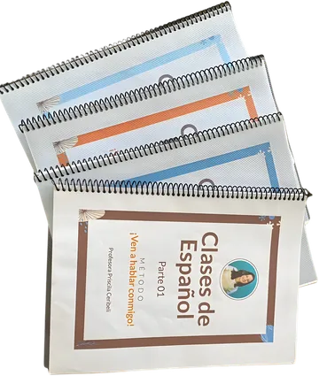
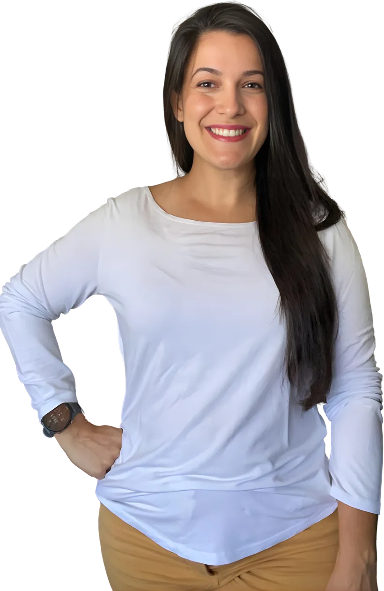
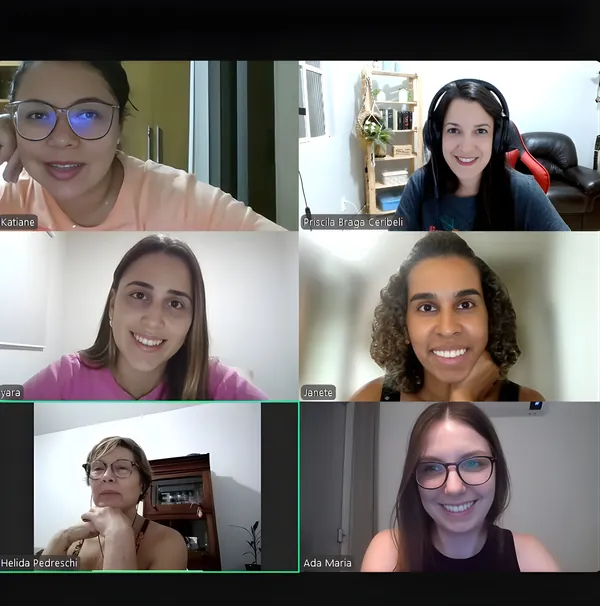
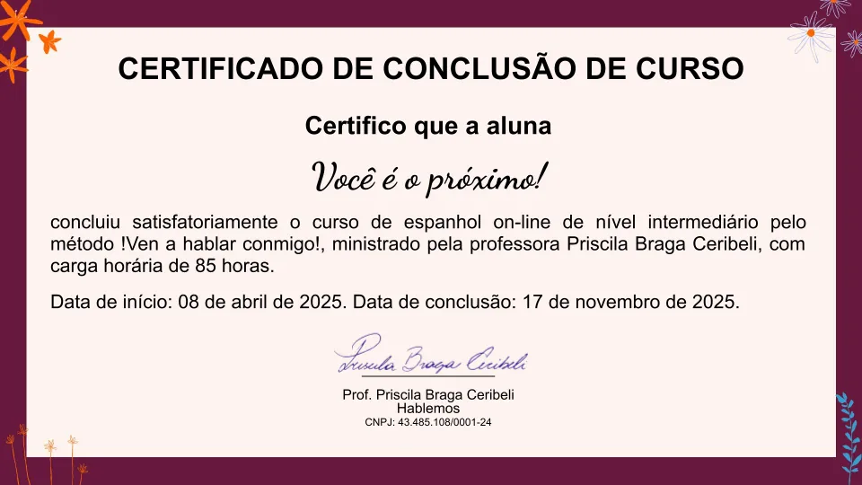
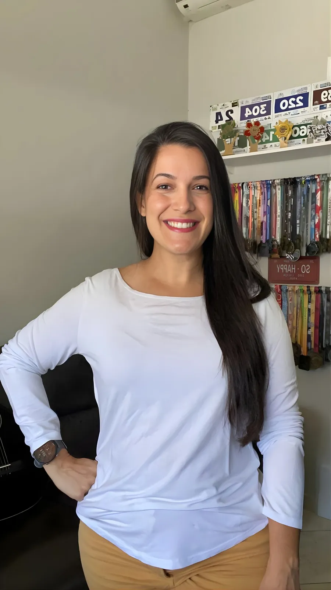
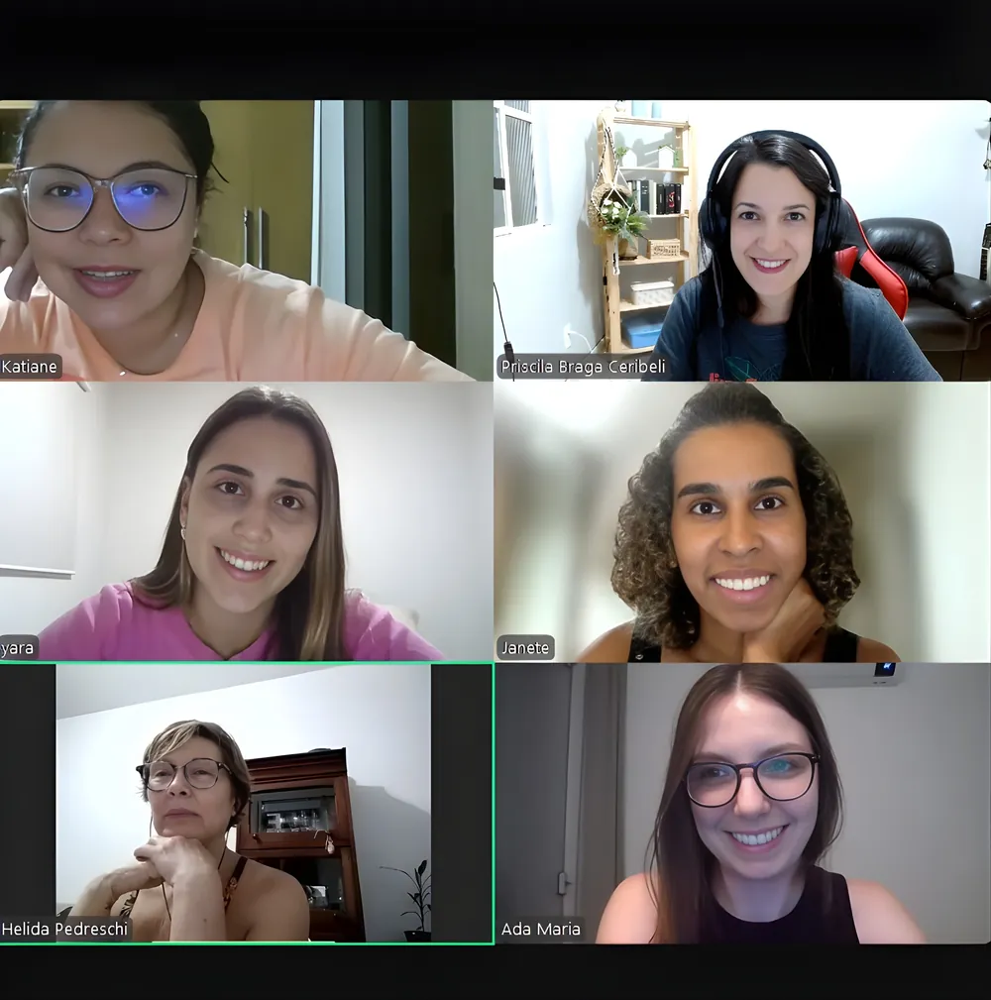
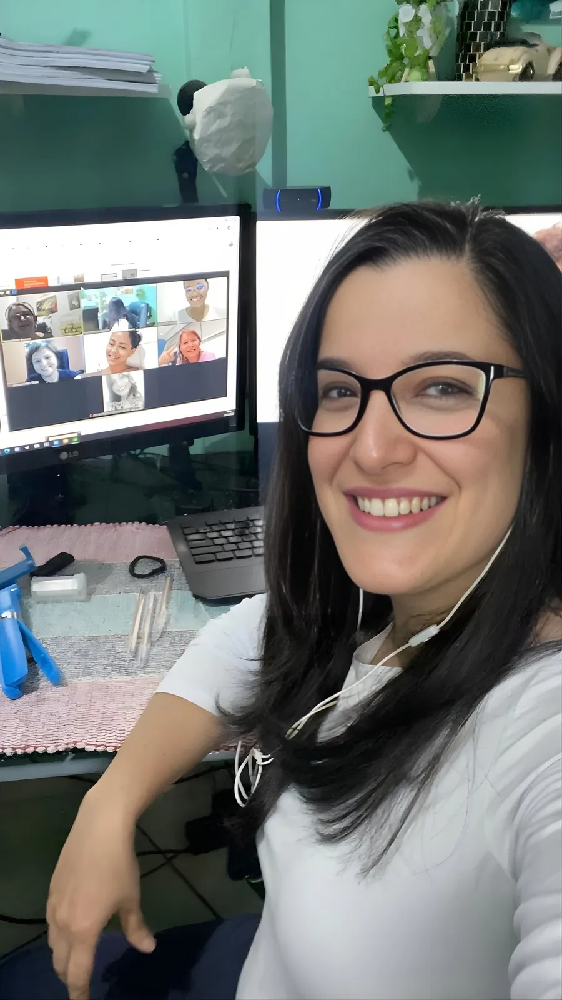

Material de apoio

Para acompanhar as aulas e praticar!
Inscrições em breve!
Conecte-se com pessoas, culturas e experiências que você sempre quis viver!


Turma 2 · da noite
Todos hablan mucho!
Aulas ao vivo e on-line
Você aprende e pratica comigo!
Conheça o Método ¡Ven a hablar conmigo! Aulas ao vivo e on-line, material de apoio, grupos reduzidos e certificado de conclusão — com suas aulas gravadas e um grupo de WhatsApp para interagir e tirar dúvidas.

Para acompanhar as aulas e praticar!
Todos hablan mucho!
Para ver e rever!
Reconheço seu esforço!

Para interagir e tirar dúvidas!
Curso de
70 horas
do básico ao intermediário B2
Meu método é mais que completo e por um preço justo: temas variados para te preparar para situações reais e certificações, por um precinho que cabe no bolso.
Aulas vivas e dadas em espanhol: você entende e fala desde o começo.
Crescimento real: do básico ao intermediário B2 com método claro e progressivo.
Tudo que você precisa: aulas ao vivo salvas, ótimo material de apoio e certificado digital.
Comunidade ativa: pratique, troque experiências e evolua com sua turma no grupo de WhatsApp.
E esse é o caminho pra conquistar sua fluência de verdade.
Grupo de ESPERA
Priscila Ceribeli, uma brasileira que aprendeu espanhol na prática da vida. Nacionalizada na Espanha, onde me graduei e vivi 10 anos maravilhosos, aprendi o idioma exatamente como você está começando hoje aqui: com uma professora, um método e muita vontade de viver todas as oportunidades que um novo idioma pode oferecer. Sou professora há mais de 10 anos e, neste curso on-line, compartilho grande parte do conhecimento que acumulei ao longo de mais de 20 anos de convivência profunda com essa língua tão linda e transformadora.
Fale com confiança, pense em espanhol e viva novas oportunidades.
Perfeito para quem nunca estudou espanhol e quer começar do jeito certo.
Também está pensado para quem quer destravar, evoluir rápido e ir além.
Perfeito para quem precisa se preparar para certificações internacionais.
Para quem quer abrir portas: no trabalho, nos estudos ou em um novo país.
Inscrições em breve!
Turma completa!
Turma completa!
Inscrições em breve! Entre no grupo de espera.
Grupo de espera“A fluência acontece quando o idioma se torna parte da sua rotina.”

Melhor curso on-line que já fiz! Aulas online e ao vivo com muito compromisso e dedicação da professora Priscila. As aulas são interativas com correção em tempo real dos erros de pronúncia, no qual ela insiste até obter a pronúncia perfeita de nós. Eu não entendia nada do idioma, com 06 meses de curso fui para Buenos Aires e soube me comunicar com os nativos perfeitamente, compreendendo tudo o que conversavam e fui elogiada que meu espanhol era muito bom. Hoje leio vários livros em espanhol, assisto séries e filmes com idioma e legenda em espanhol e entendo perfeitamente. Aulas com ela é garantia de uma experiência incrível! Recomendo muito.
Eu, Hélida, só tenho a agradecer a professora Priscila. As aulas são muito boas. Hoje, assisto filmes, escuto músicas e tenho a sensação de vitória, pois aos 65 anos estou conseguindo. Obrigada, profe. bjo
66 anos kkkkk esqueci.... 🙈
Na empresa atual, diariamente eu precisava falar/escrever espanhol e tinha muita dificuldade, dependendo muito do tradutor. Comecei as aulas de espanhol para sanar este problema e, em pouco tempo, consegui aprender o básico para me virar. As aulas da Profe são dinâmicas, com bastante conteúdo de gramática e vocabulário. Como tenho que escrever bastante, a parte de gramática me ajudou devido à sua didática; poucos cursos conseguem ser tão ricos quanto o dela, ainda mais com um preço acessível. Ao final do curso intermediário, eu já me sentia confiante para falar e escrever no trabalho e ainda acreditei que era capaz de realizar a prova de proficiência, o que me rendeu o certificado DELE nível B2. Os módulos mais avançados dela permitem ainda mais aprofundamento no idioma, com aulas adaptadas conforme sua necessidade.
Recomendo os cursos a todos que desejam sair do zero. A Profe tem muito conhecimento e uma didática incrível.
As aulas de espanhol com a professora Priscila têm sido uma experiência incrível. Cada encontro me ajuda a ganhar mais confiança na comunicação e a descobrir novas formas de me expressar. O conteúdo é dinâmico, com atividades práticas que tornam o aprendizado leve e divertido. Recomendo muito para quem deseja aprender de forma eficaz e prazerosa!
Comecei as aulas de espanhol quando entrei em uma empresa argentina. No início eu entrava e saía das reuniões sem entender praticamente nada, além de não ter nenhuma segurança para falar. Em poucos meses de aula, isso mudou completamente, já conseguia participar das reuniões em espanhol sozinha, e já não precisava pedir para repetirem ou falarem mais devagar. A Pri tem um olhar muito atento para as necessidades de cada aluno e adapta o conteúdo para o que é mais importante naquele momento. No meu caso, ela adiantou alguns temas e vocabulários essenciais para o trabalho e esse cuidado fez toda a diferença no meu aprendizado! Hoje sigo avançando no idioma e recebendo feedbacks que estou falando super bem!! Recomendo demais para quem quer aprender de forma rápida, divertida e super leve ☺️
Eu simplesmente estou amando fazer as aulas de espanhol, já aprendi bastante coisa. Creio que quando eu viajar para algum país que fale espanhol não passarei perrengue kkkk. E depois desse curso quero dar continuidade com a professora Priscila para praticar mais.
Fazer o curso da prof Pri me fez aprender de verdade, as aulas são ao vivo e com poucas pessoas o que nos permite um espaço acolhedor e de muita prática!
A Pri tem uma didática maravilhosa que a gente fala desde o primeiro dia e as aulas são divertidas, o tempo voa!
Com menos de 6 meses de curso tive a oportunidade pra viajar pra Argentina, e não passei perrengue! Depois com um pouco mais de 1 ano de curso viajei pro Chile e tive uma experiência incrível por falar espanhol de verdade!
O espanhol não só me permitiu viajar com tranquilidade, mas expandir os livros e filmes que tenho acesso.
Recomendo muito as aulas com a Pri!
Graças as aulas VHC que tive, consegui me comunicar quando fui a Argentina, assisto filmes, entendo as músicas e troco mensagens com minha amiga de Valência. As aulas de Priscila são muito claras e fácil de entender. Sua paciência e incentivo faz toda a diferença.
Estudei por dois anos com a Priscila por hobby mesmo e, pela vontade de aprender uma língua diferente no qual me identificava e, tive um aprendizado que marcou minha trajetória de um jeito muito especial. Sua leveza ao ensinar, sua dedicação em cada aula e a forma atenta como sempre se preocupou em garantir que eu realmente aprendesse fizeram toda a diferença.
Você tem uma didática tão perfeita que, sem perceber, eu fui ganhando segurança, vocabulário e confiança. Cada correção, cada explicação extra, cada detalhe que você fazia questão de reforçar… tudo isso me acompanhou de verdade.
Viajei para outros países e consegui me comunicar com tranquilidade, com alegria e com a sensação de que tudo aquilo que aprendi com você estava ali, presente em cada conversa. Voltei feliz, realizada e profundamente grata por ter tido uma professora tão comprometida e tão humana.
Obrigada por ensinar muito além do espanhol, obrigada por me ensinar com coração.
Aprender espanhol com a professora Priscila foi uma das melhores experiências que vivi em 2025. Começar do zero com a didática e com as aulas leves da Pri fez o interesse pelo idioma só aumentar. ❤️

Sim! Nós brasileiros, por causa das semelhanças entre os idiomas português e espanhol, somos capazes de assimilar um grande conteúdo em pouco tempo. Com uma base sólida, falando desde o primeiro dia, é o tempo ideal para destravar, ganhar confiança e hablar sem medo!
Misturo gramática com vocabulário e já partimos pra prática. Por exemplo, a gente aprende o presente, dias da semana e palavras do dia a dia, e depois usa tudo em conversas sobre rotina. Também teremos atividades focadas em pronúncia e dicção.
As aulas são ao vivo, bem participativas e falando o tempo todo. Depois, eu disponibilizo a gravação da mesma para você ver e rever quando quiser. E se você precisar faltar, é só assistir a gravação e manter o ritmo.
Sim! O conteúdo é perfeito para te preparar para a prova e para a vida no país hispanofalante. A gramática é sólida e fazemos muitas práticas de conversação parecidas com as dos exames.
São aulas extras focadas só em conversação. No fim de cada unidade, praticamos tudo o que aprendemos!
Gracias.
Aprender espanhol é muito mais do que estudar um idioma — é abrir portas.
É a língua oficial de mais de 20 países e o segundo idioma de comunicação internacional, usado no trabalho, nas viagens e nas oportunidades que surgem quando você menos espera.
Se você sempre quis se comunicar com segurança, viver novas experiências e alcançar objetivos que hoje parecem distantes, este é o momento!
Não adie mais o seu sonho: comece agora a construir a sua fluência e o futuro que você deseja. Vamos juntas(os)?